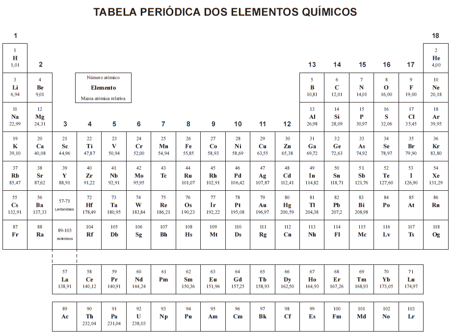

Usa os Sliders para alterar os valores indicados, de forma a poderes ver diferentes resultados.
Sugestões de Exercícios
Com Recurso à Tabela Períodica mais próxima (ou a esta):
Calula a Massa Molar do Soluto escolhido.

Esta Tabela Períodica foi a utilizada no Exame de Física e Química A de 2020, partilhada pelo IAVE (Ver o original).
Utilizando a Massa Molar dada, mas antes de veres a Tabela dos Resultados:
Calcula a quantidade química e a massa de Solvente necessária para preparar a Solução.
Podes também explicar por palavras tuas o Procedimento, e porque é que para preparar Y litros de Solução, não podemos adicionar X gramas de Soluto a Y litros de Solvente.
O Soluto escolhido é Cloreto de Sódio.
0.030mol/dm3
250ml
O Volume de Solução tem de ser igual ao Volume de um Balão Volumétrico
disponível.